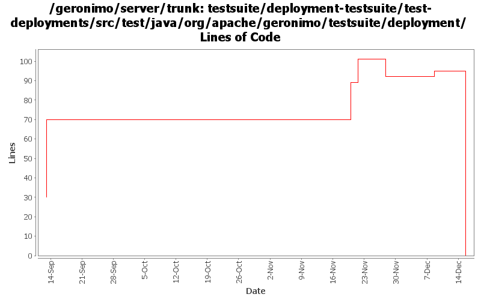

[root]/testsuite/deployment-testsuite/test-deployments/src/test/java/org/apache/geronimo/testsuite/deployment

| Author | Changes | Lines of Code | Lines per Change |
|---|---|---|---|
| Totals | 33 (100.0%) | 141 (100.0%) | 4.2 |
| kevan | 4 (12.1%) | 60 (42.6%) | 15.0 |
| jdillon | 14 (42.4%) | 45 (31.9%) | 3.2 |
| prasad | 15 (45.5%) | 36 (25.5%) | 2.4 |
* reorganised such that manifestcp can now be built and tested under same pom.
0 lines of code changed in 9 files:
* moved ExtendedSelenium and SeleniumSupport to TestSupport
* it took along with it the TestNG dependency.
* TestNG dependency no longer needs to be specified in testsuite poms.
3 lines of code changed in 2 files:
Dropped jdk14 testng javadocs
Using @Test for class (clarity)
Using Surefire 2.3-SNAPSHOT, as that appears to work with TestNG w/JDK 1.5 annos
Using consistent spacing between elements
Dropped unused maven-invoker-plugin config
Put versioning of plugins all in the top-level build/pluginManagement
Added missing license on new xml files
3 lines of code changed in 4 files:
* moved maven-compiler-plugin to use jdk15 for source and target.
* moved tests in console and deployment suites to use TestNG annotations.
* introduced testng.xml for basic and test-deployments testsets.
* all tests now run and pass successfully.
14 lines of code changed in 3 files:
* created setUp() and tearDown() since surefire was expecting JUnit.
* See GERONIMO-2579
19 lines of code changed in 1 file:
GERONIMO-2537 Update more src file headers to be compliant with new apache policy. Also made some updates for consistency
60 lines of code changed in 4 files:
Hook up basic, basic (maybe too basic) tests for testsupport/test-deployment-* ears
30 lines of code changed in 2 files:
Some basic (very basic) tests
10 lines of code changed in 2 files:
Rename some more classes to be ready to start a new set of tests
2 lines of code changed in 6 files: